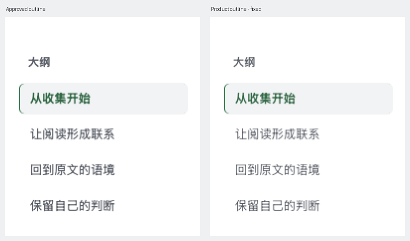
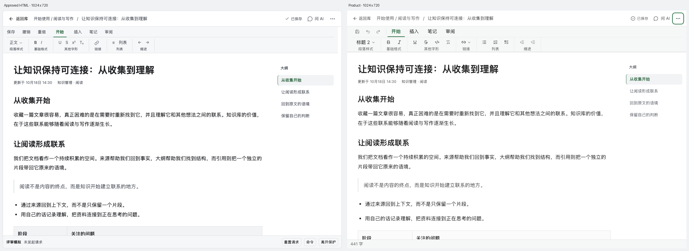
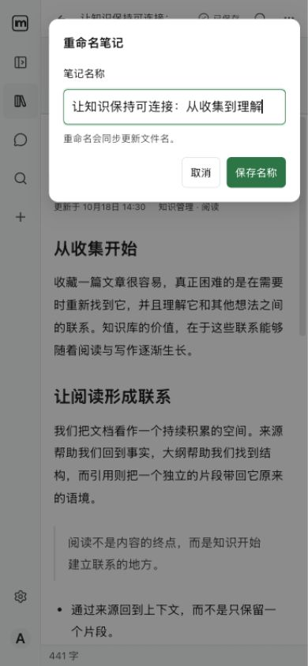
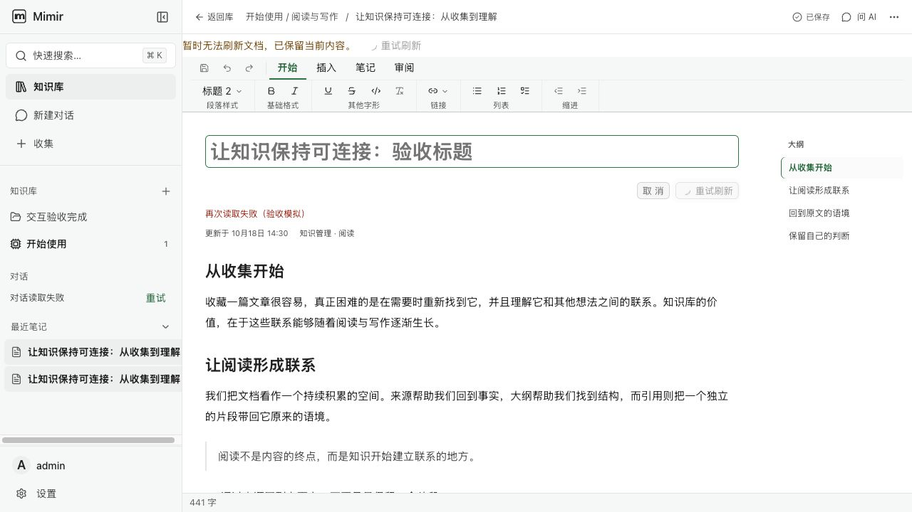

文档模块·实施核对证据
补验：大纲条目已恢复批准稿的 32px 行高、1px透明边框、171px内容宽、浅深选中/hover/focus；修复滚动联动及文末点击目标被后项抢占。

冻结稿 document-review-v1 的 78 组 / 422 状态均有源码映射；下方是实际浏览器抽验，不能视为所有状态逐一 GUI 通过。使用临时接口响应对齐内容，未写入真实笔记。
桌面：两侧文档区域均为 1024×720。左侧为批准 HTML，右侧为真实产品；批准稿工具栏是示意，真实 Office 工具保留现有组件，底部评审模拟条与产品字数条各属不同宿主。

390px 最终命令弹窗：62 / 24 / 318px
写入成功而读取失败：只重试读取
完整实测记录 · 实施与质量门记录 · 完整批准稿（未修改）
原生播放、下载完成、OS IME、读屏、Electron 及真实后端写入尚未执行。全仓检查因范围外错误仍未通过，任务保留 in_progress。